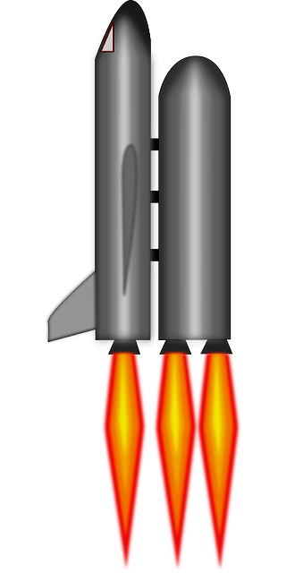

-
L E V E L: 1
- Attempts: 4
- Success: 1
- Failures: 3
- Success rate: 25%
-
C O C K P I T
- Speed (mph): 123
- Fuel (litres): 456
- Height (km): 789
- Time (hh:mm:ss): 00:12:36
-
HOW TO PLAY
-
The objective of the game is to land before fuel runs out.
-
To successfully land the spacecraft must be in vertical position.
-
The COCKPIT shows indicators of height and speed. Watch these measures.
-
Out of two successful landings the fastest one wins.
-
The rocket starts randomly at different points and it might be in different starting positions.
-
You can turn and accelerate, but you must land standing vertical at a speed below 5 mph.
-
You can control independently the right and left turbo engines for smooth maneouvres.
-
You can also control the power of the engines from none to middle to full.
-
Full power gives you more speed but also bears higher fuel consumption.
-
The landing point appears randomly over the surface of the moon.